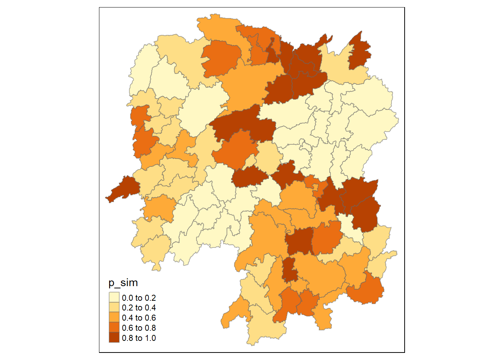

pacman::p_load(sf, sfdep, tmap, tidyverse, knitr, plotly, zoo, Kendall)In-class Exercise 2 - sfdep for Spatial Weights, GLSA & EHSA

1 Preparation
This in-class exercise use Hunan geospatial data and attribute data
hunan <- st_read(dsn = "../data/geospatial",
layer = "Hunan")Reading layer `Hunan' from data source `C:\ameernoor\ISSS624\data\geospatial' using driver `ESRI Shapefile'
Simple feature collection with 88 features and 7 fields
Geometry type: POLYGON
Dimension: XY
Bounding box: xmin: 108.7831 ymin: 24.6342 xmax: 114.2544 ymax: 30.12812
Geodetic CRS: WGS 84hunan2012 <- read_csv("../data/aspatial/Hunan_2012.csv")Code
GDPPC <- read_csv("../data/aspatial/Hunan_GDPPC.csv")in order to retain the geospatial properties, the sf data frame must always be on the left
hunan_GDPPC <- left_join(hunan,hunan2012)%>%
select(1:4,7,15)to get a glimpse of the data distribution
Code
# Set the tmap mode to "plot" for plotting
tmap_mode("plot")
# Create a thematic map using the 'hunan_GDPPC' dataset
tm_shape(hunan_GDPPC) +
# Fill the map with the variable 'GDPPC' using quantile classification
tm_fill("GDPPC",
style = "quantile",
palette = "Blues",
title = "GDPPC") +
# Add semi-transparent borders to the map
tm_borders(alpha = 0.5) +
# Set the layout options for the thematic map
tm_layout(main.title = "Distribution of GDP per capita by district, Hunan Province",
main.title.position = "left",
main.title.size = 0.8,
legend.outside = TRUE,
legend.outside.position = c("right","center"),
frame = TRUE) +
# Add a compass rose with eight points and a size of 2
tm_compass(type="8star", size = 2, position = "left") +
# Add a scale bar to the map
tm_scale_bar(position = 'left') +
# Add a grid to the map with a transparency of 0.2
tm_grid(alpha = 0.2)2 Spatial Weights
2.1 Calculating Spatial Weights
Two types of Spatial Weights: 1) Contiguity Weights considers how neighboring areas are connected or share a common border, emphasizing spatial adjacency; 2) Distance-based Weights: This type takes into account the distance between locations, giving more weight to closer locations and less weight to those farther away, capturing spatial relationships based on proximity.
2.1.1 Contiguity Weights
This part of exercise will use contiguity spatial weights using sfdep package. To derive the weights, the following steps is required:
identify contiguity neighbour list by using
st_contiguity()from sfdep package.derive the spatial weights by using
st_weights()from sfdep package
The advantage of sfdep over spdep is that its output is in the form of an sf tibble data frame. This is beneficial because sf tibble data frames are part of the tidyverse ecosystem, making it easier to work with and integrate into tidy data workflows in R.
Identifying Contiguity Neighbours
the following panel will show how to identify contiguity neighbours using various methods.
Code
# Create neighbor dataframe using Queen Method from the original 'hunan_GDPPC' dataframe
nb_queen <- hunan_GDPPC %>%
# Add a new column 'nb' (neighbors) representing contiguity relationships using spatial geometries
mutate(nb = st_contiguity(geometry),
# Insert the newly created columns at the beginning of the dataset
.before=1)
# summarize the neighbors column
summary(nb_queen$nb)Neighbour list object:
Number of regions: 88
Number of nonzero links: 448
Percentage nonzero weights: 5.785124
Average number of links: 5.090909
Link number distribution:
1 2 3 4 5 6 7 8 9 11
2 2 12 16 24 14 11 4 2 1
2 least connected regions:
30 65 with 1 link
1 most connected region:
85 with 11 linksCode
# Create neighbor dataframe using Rook Method from the original 'hunan_GDPPC' dataframe
nb_rook <- hunan_GDPPC %>%
# Add a new column 'nb' (neighbors) representing contiguity relationships using spatial geometries
mutate(nb = st_contiguity(geometry, queen = FALSE),
# Add another column 'wt' calculating weights based on contiguity relationships
wt = st_weights(nb, style = 'W'),
# Insert the newly created columns at the beginning of the dataset
.before=1)
# summarize the neighbors column
summary(nb_rook$nb)Neighbour list object:
Number of regions: 88
Number of nonzero links: 440
Percentage nonzero weights: 5.681818
Average number of links: 5
Link number distribution:
1 2 3 4 5 6 7 8 9 10
2 2 12 20 21 14 11 3 2 1
2 least connected regions:
30 65 with 1 link
1 most connected region:
85 with 10 linksSpatial relationships may extend beyond immediate neighbors when we’re dealing with complex geographical patterns or phenomena that involve interactions across multiple layers or scales. In such cases, high-order contiguity becomes relevant because it allows us to capture and analyze more distant spatial connections. This is particularly important when studying phenomena with a broader reach or influence that goes beyond the traditional notion of adjacent neighbors, providing a more comprehensive understanding of spatial dependencies in the data.
The following code chunk give example of using st_nb_lag_cumul() to derive contiguity neighbour list using lag 2 Queen’s method. It set the lag order to 2, so the result contains both 1st and 2nd order neighbors.
Code
nb2_queen <- hunan_GDPPC %>%
mutate(nb = st_contiguity(geometry),
# Add another new column 'nb2' calculating cumulative second-order contiguity relationships
nb2 = st_nb_lag_cumul(nb, 2),
.before = 1)
# Check the output
summary(nb2_queen$nb2)Neighbour list object:
Number of regions: 88
Number of nonzero links: 1324
Percentage nonzero weights: 17.09711
Average number of links: 15.04545
Link number distribution:
5 7 8 9 10 11 12 13 14 15 16 17 18 19 20 21 22 23 24 26 28 33
2 1 6 4 5 4 8 5 10 4 4 8 4 8 5 2 2 1 2 1 1 1
2 least connected regions:
30 88 with 5 links
1 most connected region:
56 with 33 linksthe following code check the whole output using the 2 orders contiguity as example
Code
kable(head(nb2_queen, n=10))| nb | nb2 | NAME_2 | ID_3 | NAME_3 | ENGTYPE_3 | County | GDPPC | geometry |
|---|---|---|---|---|---|---|---|---|
| 2, 3, 4, 57, 85 | 2, 3, 4, 5, 6, 32, 56, 57, 58, 64, 69, 75, 76, 78, 85 | Changde | 21098 | Anxiang | County | Anxiang | 23667 | POLYGON ((112.0625 29.75523… |
| 1, 57, 58, 78, 85 | 1, 3, 4, 5, 6, 8, 9, 32, 56, 57, 58, 64, 68, 69, 75, 76, 78, 85 | Changde | 21100 | Hanshou | County | Hanshou | 20981 | POLYGON ((112.2288 29.11684… |
| 1, 4, 5, 85 | 1, 2, 4, 5, 6, 32, 56, 57, 69, 75, 78, 85 | Changde | 21101 | Jinshi | County City | Jinshi | 34592 | POLYGON ((111.8927 29.6013,… |
| 1, 3, 5, 6 | 1, 2, 3, 5, 6, 57, 69, 75, 85 | Changde | 21102 | Li | County | Li | 24473 | POLYGON ((111.3731 29.94649… |
| 3, 4, 6, 85 | 1, 2, 3, 4, 6, 32, 56, 57, 69, 75, 78, 85 | Changde | 21103 | Linli | County | Linli | 25554 | POLYGON ((111.6324 29.76288… |
| 4, 5, 69, 75, 85 | 1, 2, 3, 4, 5, 32, 53, 55, 56, 57, 69, 75, 78, 85 | Changde | 21104 | Shimen | County | Shimen | 27137 | POLYGON ((110.8825 30.11675… |
| 67, 71, 74, 84 | 9, 19, 66, 67, 71, 73, 74, 76, 84, 86 | Changsha | 21109 | Liuyang | County City | Liuyang | 63118 | POLYGON ((113.9905 28.5682,… |
| 9, 46, 47, 56, 78, 80, 86 | 2, 9, 19, 21, 31, 32, 34, 35, 36, 41, 45, 46, 47, 56, 58, 66, 68, 74, 78, 80, 84, 85, 86 | Changsha | 21110 | Ningxiang | County | Ningxiang | 62202 | POLYGON ((112.7181 28.38299… |
| 8, 66, 68, 78, 84, 86 | 2, 7, 8, 19, 21, 35, 46, 47, 56, 58, 66, 67, 68, 74, 76, 78, 80, 84, 85, 86 | Changsha | 21111 | Wangcheng | County | Wangcheng | 70666 | POLYGON ((112.7914 28.52688… |
| 16, 17, 19, 20, 22, 70, 72, 73 | 11, 14, 15, 16, 17, 18, 19, 20, 21, 22, 23, 70, 71, 72, 73, 74, 82, 83, 86 | Chenzhou | 21112 | Anren | County | Anren | 12761 | POLYGON ((113.1757 26.82734… |
Deriving contiguity weights
The following panel shows how to use st_weights() of sfdep package to derive contiguity weights. the function provides three arguments which includes: - nb: a neighbor list object as created by st_neighbors() - style: Default “W” for row standardized weights. The value can also be “B”, “C”, “U”, “minmax”, and “S”. B is the basic binary coding, W is row standardises (sums over all links to n), C is globally standardised(sums over all links to n). U is equal to C divided by number of neighbours (sums over all links to unity, while S is a variance-stabilizing coding scheme (sums over all links to n). - allow_zero: If TRUE, assigns zero as lagged value to zone without neighbors.
The following code will use queen method to derive contiguity weights (it’s the default method when the argument is not specified)
Code
wm_q <- hunan_GDPPC %>%
mutate(nb = st_contiguity(geometry),
# add the weight column
wt = st_weights(nb, style = "W"),
.before = 1)
# check the output
wm_qSimple feature collection with 88 features and 8 fields
Geometry type: POLYGON
Dimension: XY
Bounding box: xmin: 108.7831 ymin: 24.6342 xmax: 114.2544 ymax: 30.12812
Geodetic CRS: WGS 84
First 10 features:
nb
1 2, 3, 4, 57, 85
2 1, 57, 58, 78, 85
3 1, 4, 5, 85
4 1, 3, 5, 6
5 3, 4, 6, 85
6 4, 5, 69, 75, 85
7 67, 71, 74, 84
8 9, 46, 47, 56, 78, 80, 86
9 8, 66, 68, 78, 84, 86
10 16, 17, 19, 20, 22, 70, 72, 73
wt
1 0.2, 0.2, 0.2, 0.2, 0.2
2 0.2, 0.2, 0.2, 0.2, 0.2
3 0.25, 0.25, 0.25, 0.25
4 0.25, 0.25, 0.25, 0.25
5 0.25, 0.25, 0.25, 0.25
6 0.2, 0.2, 0.2, 0.2, 0.2
7 0.25, 0.25, 0.25, 0.25
8 0.1428571, 0.1428571, 0.1428571, 0.1428571, 0.1428571, 0.1428571, 0.1428571
9 0.1666667, 0.1666667, 0.1666667, 0.1666667, 0.1666667, 0.1666667
10 0.125, 0.125, 0.125, 0.125, 0.125, 0.125, 0.125, 0.125
NAME_2 ID_3 NAME_3 ENGTYPE_3 County GDPPC
1 Changde 21098 Anxiang County Anxiang 23667
2 Changde 21100 Hanshou County Hanshou 20981
3 Changde 21101 Jinshi County City Jinshi 34592
4 Changde 21102 Li County Li 24473
5 Changde 21103 Linli County Linli 25554
6 Changde 21104 Shimen County Shimen 27137
7 Changsha 21109 Liuyang County City Liuyang 63118
8 Changsha 21110 Ningxiang County Ningxiang 62202
9 Changsha 21111 Wangcheng County Wangcheng 70666
10 Chenzhou 21112 Anren County Anren 12761
geometry
1 POLYGON ((112.0625 29.75523...
2 POLYGON ((112.2288 29.11684...
3 POLYGON ((111.8927 29.6013,...
4 POLYGON ((111.3731 29.94649...
5 POLYGON ((111.6324 29.76288...
6 POLYGON ((110.8825 30.11675...
7 POLYGON ((113.9905 28.5682,...
8 POLYGON ((112.7181 28.38299...
9 POLYGON ((112.7914 28.52688...
10 POLYGON ((113.1757 26.82734...Code
wm2_q <- hunan_GDPPC %>%
mutate(nb = st_contiguity(geometry),
wt = st_weights(nb, style = "W"),
nb2 = st_nb_lag_cumul(nb, 2),
wt2 = st_weights(nb2, style = "W"),
.before = 1)
# Check the output
wm2_qSimple feature collection with 88 features and 10 fields
Geometry type: POLYGON
Dimension: XY
Bounding box: xmin: 108.7831 ymin: 24.6342 xmax: 114.2544 ymax: 30.12812
Geodetic CRS: WGS 84
First 10 features:
nb
1 2, 3, 4, 57, 85
2 1, 57, 58, 78, 85
3 1, 4, 5, 85
4 1, 3, 5, 6
5 3, 4, 6, 85
6 4, 5, 69, 75, 85
7 67, 71, 74, 84
8 9, 46, 47, 56, 78, 80, 86
9 8, 66, 68, 78, 84, 86
10 16, 17, 19, 20, 22, 70, 72, 73
wt
1 0.2, 0.2, 0.2, 0.2, 0.2
2 0.2, 0.2, 0.2, 0.2, 0.2
3 0.25, 0.25, 0.25, 0.25
4 0.25, 0.25, 0.25, 0.25
5 0.25, 0.25, 0.25, 0.25
6 0.2, 0.2, 0.2, 0.2, 0.2
7 0.25, 0.25, 0.25, 0.25
8 0.1428571, 0.1428571, 0.1428571, 0.1428571, 0.1428571, 0.1428571, 0.1428571
9 0.1666667, 0.1666667, 0.1666667, 0.1666667, 0.1666667, 0.1666667
10 0.125, 0.125, 0.125, 0.125, 0.125, 0.125, 0.125, 0.125
nb2
1 2, 3, 4, 5, 6, 32, 56, 57, 58, 64, 69, 75, 76, 78, 85
2 1, 3, 4, 5, 6, 8, 9, 32, 56, 57, 58, 64, 68, 69, 75, 76, 78, 85
3 1, 2, 4, 5, 6, 32, 56, 57, 69, 75, 78, 85
4 1, 2, 3, 5, 6, 57, 69, 75, 85
5 1, 2, 3, 4, 6, 32, 56, 57, 69, 75, 78, 85
6 1, 2, 3, 4, 5, 32, 53, 55, 56, 57, 69, 75, 78, 85
7 9, 19, 66, 67, 71, 73, 74, 76, 84, 86
8 2, 9, 19, 21, 31, 32, 34, 35, 36, 41, 45, 46, 47, 56, 58, 66, 68, 74, 78, 80, 84, 85, 86
9 2, 7, 8, 19, 21, 35, 46, 47, 56, 58, 66, 67, 68, 74, 76, 78, 80, 84, 85, 86
10 11, 14, 15, 16, 17, 18, 19, 20, 21, 22, 23, 70, 71, 72, 73, 74, 82, 83, 86
wt2
1 0.06666667, 0.06666667, 0.06666667, 0.06666667, 0.06666667, 0.06666667, 0.06666667, 0.06666667, 0.06666667, 0.06666667, 0.06666667, 0.06666667, 0.06666667, 0.06666667, 0.06666667
2 0.05555556, 0.05555556, 0.05555556, 0.05555556, 0.05555556, 0.05555556, 0.05555556, 0.05555556, 0.05555556, 0.05555556, 0.05555556, 0.05555556, 0.05555556, 0.05555556, 0.05555556, 0.05555556, 0.05555556, 0.05555556
3 0.08333333, 0.08333333, 0.08333333, 0.08333333, 0.08333333, 0.08333333, 0.08333333, 0.08333333, 0.08333333, 0.08333333, 0.08333333, 0.08333333
4 0.1111111, 0.1111111, 0.1111111, 0.1111111, 0.1111111, 0.1111111, 0.1111111, 0.1111111, 0.1111111
5 0.08333333, 0.08333333, 0.08333333, 0.08333333, 0.08333333, 0.08333333, 0.08333333, 0.08333333, 0.08333333, 0.08333333, 0.08333333, 0.08333333
6 0.07142857, 0.07142857, 0.07142857, 0.07142857, 0.07142857, 0.07142857, 0.07142857, 0.07142857, 0.07142857, 0.07142857, 0.07142857, 0.07142857, 0.07142857, 0.07142857
7 0.1, 0.1, 0.1, 0.1, 0.1, 0.1, 0.1, 0.1, 0.1, 0.1
8 0.04347826, 0.04347826, 0.04347826, 0.04347826, 0.04347826, 0.04347826, 0.04347826, 0.04347826, 0.04347826, 0.04347826, 0.04347826, 0.04347826, 0.04347826, 0.04347826, 0.04347826, 0.04347826, 0.04347826, 0.04347826, 0.04347826, 0.04347826, 0.04347826, 0.04347826, 0.04347826
9 0.05, 0.05, 0.05, 0.05, 0.05, 0.05, 0.05, 0.05, 0.05, 0.05, 0.05, 0.05, 0.05, 0.05, 0.05, 0.05, 0.05, 0.05, 0.05, 0.05
10 0.05263158, 0.05263158, 0.05263158, 0.05263158, 0.05263158, 0.05263158, 0.05263158, 0.05263158, 0.05263158, 0.05263158, 0.05263158, 0.05263158, 0.05263158, 0.05263158, 0.05263158, 0.05263158, 0.05263158, 0.05263158, 0.05263158
NAME_2 ID_3 NAME_3 ENGTYPE_3 County GDPPC
1 Changde 21098 Anxiang County Anxiang 23667
2 Changde 21100 Hanshou County Hanshou 20981
3 Changde 21101 Jinshi County City Jinshi 34592
4 Changde 21102 Li County Li 24473
5 Changde 21103 Linli County Linli 25554
6 Changde 21104 Shimen County Shimen 27137
7 Changsha 21109 Liuyang County City Liuyang 63118
8 Changsha 21110 Ningxiang County Ningxiang 62202
9 Changsha 21111 Wangcheng County Wangcheng 70666
10 Chenzhou 21112 Anren County Anren 12761
geometry
1 POLYGON ((112.0625 29.75523...
2 POLYGON ((112.2288 29.11684...
3 POLYGON ((111.8927 29.6013,...
4 POLYGON ((111.3731 29.94649...
5 POLYGON ((111.6324 29.76288...
6 POLYGON ((110.8825 30.11675...
7 POLYGON ((113.9905 28.5682,...
8 POLYGON ((112.7181 28.38299...
9 POLYGON ((112.7914 28.52688...
10 POLYGON ((113.1757 26.82734...2.1.2 Distance-based Weights
The following panel display examples of how to use various method of deriving distance-based spatial weights. Important functions used includes: - st_nb_dists() of sfdep to calculate the nearest neighbour distance, generating a list of distances for each feature’s neighbors. - unlist() of Base R to convert output into a vector form to enable summary statistics. - st_dists_band() of sfdep is used to identify neighbors based on a distance band, by specifiying upper and lower arguments. The output is a list of neighbours (i.e. nb). - st_weights() is used to calculate spatial weights of the nb list. - st_knn() of sfdep is used to identify specified number of neighbors (default is k=1, one nearest neighbour). - st_contiguity() of sfdep is used to identify the neighbours using contiguity criteria. - st_inverse_distance() is used to calculate inverse distance weights of neighbours on the nb list.
find maximum distance in knn with 1 neighbor
Code
# Extract the geometry (spatial information) from the 'hunan_GDPPC' dataset
geo <- sf::st_geometry(hunan_GDPPC)
# Create a spatial weights matrix using k-nearest neighbors (KNN) for the extracted geometry
nb <- st_knn(geo, longlat = TRUE)
# Calculate the distances between each feature's centroid and its k-nearest neighbors
dists <- unlist(st_nb_dists(geo, nb))
# show the result
summary(dists) Min. 1st Qu. Median Mean 3rd Qu. Max.
21.56 29.11 36.89 37.34 43.21 65.80 use the maximum distance to set threshold value in the following fixed distance weights calculation code:
Code
# Create a new variable wm_fd using the hunan_GDPPC data frame
wm_fd <- hunan_GDPPC %>%
# Add a new column 'nb' to the data frame
mutate(
nb = st_dist_band(geometry, upper = 66), # Calculate a distance band based on geometry
# Add a new column 'wt' to the data frame
wt = st_weights(nb), # Calculate weights based on the distance band
# Place the new columns 'nb' and 'wt' before the existing columns in the data frame
.before = 1
)
# check the output
print(summary(wm_fd$nb))Neighbour list object:
Number of regions: 88
Number of nonzero links: 400
Percentage nonzero weights: 5.165289
Average number of links: 4.545455
Link number distribution:
1 2 3 4 5 6 7
4 7 10 16 23 23 5
4 least connected regions:
30 32 65 75 with 1 link
5 most connected regions:
41 52 58 63 80 with 7 links
NULLCode
print(glimpse(wm_fd))Rows: 88
Columns: 9
$ nb <nb> <2, 3, 4, 5, 57, 64>, <1, 57, 58, 78, 85>, <1, 4, 5, 57>, <1,…
$ wt <list> <0.1666667, 0.1666667, 0.1666667, 0.1666667, 0.1666667, 0.1…
$ NAME_2 <chr> "Changde", "Changde", "Changde", "Changde", "Changde", "Chan…
$ ID_3 <int> 21098, 21100, 21101, 21102, 21103, 21104, 21109, 21110, 2111…
$ NAME_3 <chr> "Anxiang", "Hanshou", "Jinshi", "Li", "Linli", "Shimen", "Li…
$ ENGTYPE_3 <chr> "County", "County", "County City", "County", "County", "Coun…
$ County <chr> "Anxiang", "Hanshou", "Jinshi", "Li", "Linli", "Shimen", "Li…
$ GDPPC <dbl> 23667, 20981, 34592, 24473, 25554, 27137, 63118, 62202, 7066…
$ geometry <POLYGON [°]> POLYGON ((112.0625 29.75523..., POLYGON ((112.2288 2…
Simple feature collection with 88 features and 8 fields
Geometry type: POLYGON
Dimension: XY
Bounding box: xmin: 108.7831 ymin: 24.6342 xmax: 114.2544 ymax: 30.12812
Geodetic CRS: WGS 84
First 10 features:
nb
1 2, 3, 4, 5, 57, 64
2 1, 57, 58, 78, 85
3 1, 4, 5, 57
4 1, 3, 5, 6
5 1, 3, 4, 6, 69
6 4, 5, 69
7 67, 71, 84
8 9, 46, 47, 78, 80
9 8, 46, 66, 68, 84, 86
10 16, 20, 22, 70, 72, 73
wt NAME_2
1 0.1666667, 0.1666667, 0.1666667, 0.1666667, 0.1666667, 0.1666667 Changde
2 0.2, 0.2, 0.2, 0.2, 0.2 Changde
3 0.25, 0.25, 0.25, 0.25 Changde
4 0.25, 0.25, 0.25, 0.25 Changde
5 0.2, 0.2, 0.2, 0.2, 0.2 Changde
6 0.3333333, 0.3333333, 0.3333333 Changde
7 0.3333333, 0.3333333, 0.3333333 Changsha
8 0.2, 0.2, 0.2, 0.2, 0.2 Changsha
9 0.1666667, 0.1666667, 0.1666667, 0.1666667, 0.1666667, 0.1666667 Changsha
10 0.1666667, 0.1666667, 0.1666667, 0.1666667, 0.1666667, 0.1666667 Chenzhou
ID_3 NAME_3 ENGTYPE_3 County GDPPC geometry
1 21098 Anxiang County Anxiang 23667 POLYGON ((112.0625 29.75523...
2 21100 Hanshou County Hanshou 20981 POLYGON ((112.2288 29.11684...
3 21101 Jinshi County City Jinshi 34592 POLYGON ((111.8927 29.6013,...
4 21102 Li County Li 24473 POLYGON ((111.3731 29.94649...
5 21103 Linli County Linli 25554 POLYGON ((111.6324 29.76288...
6 21104 Shimen County Shimen 27137 POLYGON ((110.8825 30.11675...
7 21109 Liuyang County City Liuyang 63118 POLYGON ((113.9905 28.5682,...
8 21110 Ningxiang County Ningxiang 62202 POLYGON ((112.7181 28.38299...
9 21111 Wangcheng County Wangcheng 70666 POLYGON ((112.7914 28.52688...
10 21112 Anren County Anren 12761 POLYGON ((113.1757 26.82734...using st_knn with number of neighbors (k) fixed to 8, it will find 8 nearest neighbours for each feature, without being limited by maximum distance (adaptive).
Code
wm_ad <- hunan_GDPPC %>%
mutate(nb = st_knn(geometry,
k=8),
wt = st_weights(nb),
.before = 1)
# check the output
print(summary(wm_ad$nb))Neighbour list object:
Number of regions: 88
Number of nonzero links: 704
Percentage nonzero weights: 9.090909
Average number of links: 8
Non-symmetric neighbours list
Link number distribution:
8
88
88 least connected regions:
1 2 3 4 5 6 7 8 9 10 11 12 13 14 15 16 17 18 19 20 21 22 23 24 25 26 27 28 29 30 31 32 33 34 35 36 37 38 39 40 41 42 43 44 45 46 47 48 49 50 51 52 53 54 55 56 57 58 59 60 61 62 63 64 65 66 67 68 69 70 71 72 73 74 75 76 77 78 79 80 81 82 83 84 85 86 87 88 with 8 links
88 most connected regions:
1 2 3 4 5 6 7 8 9 10 11 12 13 14 15 16 17 18 19 20 21 22 23 24 25 26 27 28 29 30 31 32 33 34 35 36 37 38 39 40 41 42 43 44 45 46 47 48 49 50 51 52 53 54 55 56 57 58 59 60 61 62 63 64 65 66 67 68 69 70 71 72 73 74 75 76 77 78 79 80 81 82 83 84 85 86 87 88 with 8 links
NULLCode
print(glimpse(wm_ad))Rows: 88
Columns: 9
$ nb <nb> <2, 3, 4, 5, 57, 58, 64, 76>, <1, 3, 8, 57, 58, 68, 78, 85>, …
$ wt <list> <0.125, 0.125, 0.125, 0.125, 0.125, 0.125, 0.125, 0.125>, <…
$ NAME_2 <chr> "Changde", "Changde", "Changde", "Changde", "Changde", "Chan…
$ ID_3 <int> 21098, 21100, 21101, 21102, 21103, 21104, 21109, 21110, 2111…
$ NAME_3 <chr> "Anxiang", "Hanshou", "Jinshi", "Li", "Linli", "Shimen", "Li…
$ ENGTYPE_3 <chr> "County", "County", "County City", "County", "County", "Coun…
$ County <chr> "Anxiang", "Hanshou", "Jinshi", "Li", "Linli", "Shimen", "Li…
$ GDPPC <dbl> 23667, 20981, 34592, 24473, 25554, 27137, 63118, 62202, 7066…
$ geometry <POLYGON [°]> POLYGON ((112.0625 29.75523..., POLYGON ((112.2288 2…
Simple feature collection with 88 features and 8 fields
Geometry type: POLYGON
Dimension: XY
Bounding box: xmin: 108.7831 ymin: 24.6342 xmax: 114.2544 ymax: 30.12812
Geodetic CRS: WGS 84
First 10 features:
nb
1 2, 3, 4, 5, 57, 58, 64, 76
2 1, 3, 8, 57, 58, 68, 78, 85
3 1, 2, 4, 5, 6, 57, 64, 85
4 1, 2, 3, 5, 6, 57, 64, 69
5 1, 2, 3, 4, 6, 57, 69, 85
6 1, 2, 3, 4, 5, 69, 75, 85
7 9, 66, 67, 68, 71, 74, 84, 86
8 2, 9, 35, 46, 47, 78, 80, 86
9 8, 46, 47, 66, 68, 78, 84, 86
10 16, 17, 19, 20, 22, 70, 72, 73
wt NAME_2 ID_3
1 0.125, 0.125, 0.125, 0.125, 0.125, 0.125, 0.125, 0.125 Changde 21098
2 0.125, 0.125, 0.125, 0.125, 0.125, 0.125, 0.125, 0.125 Changde 21100
3 0.125, 0.125, 0.125, 0.125, 0.125, 0.125, 0.125, 0.125 Changde 21101
4 0.125, 0.125, 0.125, 0.125, 0.125, 0.125, 0.125, 0.125 Changde 21102
5 0.125, 0.125, 0.125, 0.125, 0.125, 0.125, 0.125, 0.125 Changde 21103
6 0.125, 0.125, 0.125, 0.125, 0.125, 0.125, 0.125, 0.125 Changde 21104
7 0.125, 0.125, 0.125, 0.125, 0.125, 0.125, 0.125, 0.125 Changsha 21109
8 0.125, 0.125, 0.125, 0.125, 0.125, 0.125, 0.125, 0.125 Changsha 21110
9 0.125, 0.125, 0.125, 0.125, 0.125, 0.125, 0.125, 0.125 Changsha 21111
10 0.125, 0.125, 0.125, 0.125, 0.125, 0.125, 0.125, 0.125 Chenzhou 21112
NAME_3 ENGTYPE_3 County GDPPC geometry
1 Anxiang County Anxiang 23667 POLYGON ((112.0625 29.75523...
2 Hanshou County Hanshou 20981 POLYGON ((112.2288 29.11684...
3 Jinshi County City Jinshi 34592 POLYGON ((111.8927 29.6013,...
4 Li County Li 24473 POLYGON ((111.3731 29.94649...
5 Linli County Linli 25554 POLYGON ((111.6324 29.76288...
6 Shimen County Shimen 27137 POLYGON ((110.8825 30.11675...
7 Liuyang County City Liuyang 63118 POLYGON ((113.9905 28.5682,...
8 Ningxiang County Ningxiang 62202 POLYGON ((112.7181 28.38299...
9 Wangcheng County Wangcheng 70666 POLYGON ((112.7914 28.52688...
10 Anren County Anren 12761 POLYGON ((113.1757 26.82734...calculate the weight based on inverse distance (the farther from the feature, the less weight).
Code
wm_idw <- hunan_GDPPC %>%
mutate(nb = st_contiguity(geometry), # set the neighbours based on contiguity
wts = st_inverse_distance(nb, geometry, # Create a new variable 'wts' representing inverse distance weights by using the 'st_inverse_distance' function.
scale = 1, # Set the scale parameter to 1, meaning distances will be used as they are.
alpha = 1), # Set the alpha parameter to 1, indicating a linear decrease in influence with distance.
.before = 1)
# check the output
print(summary(wm_idw$nb))Neighbour list object:
Number of regions: 88
Number of nonzero links: 448
Percentage nonzero weights: 5.785124
Average number of links: 5.090909
Link number distribution:
1 2 3 4 5 6 7 8 9 11
2 2 12 16 24 14 11 4 2 1
2 least connected regions:
30 65 with 1 link
1 most connected region:
85 with 11 links
NULLCode
print(glimpse(wm_idw))Rows: 88
Columns: 9
$ nb <nb> <2, 3, 4, 57, 85>, <1, 57, 58, 78, 85>, <1, 4, 5, 85>, <1, 3,…
$ wts <list> <0.01526149, 0.03515537, 0.02176677, 0.02836978, 0.01029857…
$ NAME_2 <chr> "Changde", "Changde", "Changde", "Changde", "Changde", "Chan…
$ ID_3 <int> 21098, 21100, 21101, 21102, 21103, 21104, 21109, 21110, 2111…
$ NAME_3 <chr> "Anxiang", "Hanshou", "Jinshi", "Li", "Linli", "Shimen", "Li…
$ ENGTYPE_3 <chr> "County", "County", "County City", "County", "County", "Coun…
$ County <chr> "Anxiang", "Hanshou", "Jinshi", "Li", "Linli", "Shimen", "Li…
$ GDPPC <dbl> 23667, 20981, 34592, 24473, 25554, 27137, 63118, 62202, 7066…
$ geometry <POLYGON [°]> POLYGON ((112.0625 29.75523..., POLYGON ((112.2288 2…
Simple feature collection with 88 features and 8 fields
Geometry type: POLYGON
Dimension: XY
Bounding box: xmin: 108.7831 ymin: 24.6342 xmax: 114.2544 ymax: 30.12812
Geodetic CRS: WGS 84
First 10 features:
nb
1 2, 3, 4, 57, 85
2 1, 57, 58, 78, 85
3 1, 4, 5, 85
4 1, 3, 5, 6
5 3, 4, 6, 85
6 4, 5, 69, 75, 85
7 67, 71, 74, 84
8 9, 46, 47, 56, 78, 80, 86
9 8, 66, 68, 78, 84, 86
10 16, 17, 19, 20, 22, 70, 72, 73
wts
1 0.01526149, 0.03515537, 0.02176677, 0.02836978, 0.01029857
2 0.01526149, 0.01601100, 0.01911052, 0.02327058, 0.01591694
3 0.03515537, 0.04581089, 0.04116397, 0.01208437
4 0.02176677, 0.04581089, 0.04637578, 0.01585302
5 0.04116397, 0.04637578, 0.01896212, 0.01351099
6 0.01585302, 0.01896212, 0.02710909, 0.01140718, 0.01080890
7 0.01621067, 0.01536702, 0.01133628, 0.01836488
8 0.01930410, 0.02675555, 0.02151751, 0.01076895, 0.02608065, 0.01519804, 0.01337412
9 0.01930410, 0.01651371, 0.01798519, 0.01473155, 0.03015561, 0.01612293
10 0.02737233, 0.01390810, 0.01458881, 0.02156771, 0.02419268, 0.02350470, 0.01784174, 0.01621545
NAME_2 ID_3 NAME_3 ENGTYPE_3 County GDPPC
1 Changde 21098 Anxiang County Anxiang 23667
2 Changde 21100 Hanshou County Hanshou 20981
3 Changde 21101 Jinshi County City Jinshi 34592
4 Changde 21102 Li County Li 24473
5 Changde 21103 Linli County Linli 25554
6 Changde 21104 Shimen County Shimen 27137
7 Changsha 21109 Liuyang County City Liuyang 63118
8 Changsha 21110 Ningxiang County Ningxiang 62202
9 Changsha 21111 Wangcheng County Wangcheng 70666
10 Chenzhou 21112 Anren County Anren 12761
geometry
1 POLYGON ((112.0625 29.75523...
2 POLYGON ((112.2288 29.11684...
3 POLYGON ((111.8927 29.6013,...
4 POLYGON ((111.3731 29.94649...
5 POLYGON ((111.6324 29.76288...
6 POLYGON ((110.8825 30.11675...
7 POLYGON ((113.9905 28.5682,...
8 POLYGON ((112.7181 28.38299...
9 POLYGON ((112.7914 28.52688...
10 POLYGON ((113.1757 26.82734...3 Global and Local Measures of Spatial Association
3.1 Global Measures of Spatial Association
The global spatial association here is measured using Moran’s I statistics in sfdep package. Specifically global_moran, and global_moran_test(), globel_moran_perm() and functions are used.
The following panel show step by step of how its done.
Code
wm_q <- hunan_GDPPC %>%
mutate(nb = st_contiguity(geometry),
wt = st_weights(nb,
style = "W"),
.before = 1)
# check the output
glimpse(wm_q)Rows: 88
Columns: 9
$ nb <nb> <2, 3, 4, 57, 85>, <1, 57, 58, 78, 85>, <1, 4, 5, 85>, <1, 3,…
$ wt <list> <0.2, 0.2, 0.2, 0.2, 0.2>, <0.2, 0.2, 0.2, 0.2, 0.2>, <0.25…
$ NAME_2 <chr> "Changde", "Changde", "Changde", "Changde", "Changde", "Chan…
$ ID_3 <int> 21098, 21100, 21101, 21102, 21103, 21104, 21109, 21110, 2111…
$ NAME_3 <chr> "Anxiang", "Hanshou", "Jinshi", "Li", "Linli", "Shimen", "Li…
$ ENGTYPE_3 <chr> "County", "County", "County City", "County", "County", "Coun…
$ County <chr> "Anxiang", "Hanshou", "Jinshi", "Li", "Linli", "Shimen", "Li…
$ GDPPC <dbl> 23667, 20981, 34592, 24473, 25554, 27137, 63118, 62202, 7066…
$ geometry <POLYGON [°]> POLYGON ((112.0625 29.75523..., POLYGON ((112.2288 2…Code
moranI <- global_moran(wm_q$GDPPC,
wm_q$nb,
wm_q$wt)
# check the output
glimpse(moranI)List of 2
$ I: num 0.301
$ K: num 7.64The Moran’s I value of 0.301 indicates that there is a moderate positive spatial autocorrelation in the distribution of GDP per capita (GDPPC). Spatial autocorrelation means that similar values tend to be clustered together in geographic space. In this context, areas with similar economic conditions are somewhat grouped or clustered on the map. The value of K, which is 7.64 in this case, provides a reference point for what we might expect under the assumption of spatial randomness. If the observed Moran’s I value is significantly different from the expected value of K, it suggests that the spatial pattern is not random. In simpler terms, the Moran’s I value of 0.301 is telling us that the distribution of GDP per capita in the geographic areas being studied is not random – there is a discernible pattern where neighboring areas tend to have similar economic conditions.
Code
global_moran_test(wm_q$GDPPC,
wm_q$nb,
wm_q$wt)
Moran I test under randomisation
data: x
weights: listw
Moran I statistic standard deviate = 4.7351, p-value = 1.095e-06
alternative hypothesis: greater
sample estimates:
Moran I statistic Expectation Variance
0.300749970 -0.011494253 0.004348351 The Global Moran’s I test was conducted to assess whether the spatial pattern of GDP per capita (GDPPC) is random or exhibits clustering. The Moran I statistic standard deviate, which is 4.7351, indicates a strong positive spatial autocorrelation, reaffirming our earlier finding of a moderate positive spatial autocorrelation (Moran’s I value of 0.301). The p-value, being very small (1.095e-06), suggests that the observed spatial pattern is highly unlikely to occur by random chance. In simpler terms, this indicates a significant spatial clustering of similar economic conditions in neighboring areas on the map.
Code
set.seed(1234) # set seed to ensure computation is reproducible
global_moran_perm(wm_q$GDPPC,
wm_q$nb,
wm_q$wt,
nsim = 99) # number of simulation is nsim + 1, which means in this current setting, 100 simulation will be performed.
Monte-Carlo simulation of Moran I
data: x
weights: listw
number of simulations + 1: 100
statistic = 0.30075, observed rank = 100, p-value < 2.2e-16
alternative hypothesis: two.sidedp-value is smaller than alpha value of 0.05. Hence, reject the null hypothesis that the spatial patterns spatial independent. Because the Moran’s I statistics is greater than 0. We can infer the spatial distribution shows sign of clustering.
The use of Monte Carlo simulation global_moran_perm(), is preferred over the normal global Moran test global_moran_test() when assessing spatial patterns because it provides a more reliable statistical test. Monte Carlo simulation generates many random scenarios to estimate the distribution of Moran’s I under the assumption of spatial randomness, allowing for a non-parametric evaluation of statistical significance. This approach is robust, especially when the assumptions of normality may not hold, making it a more flexible and accurate method for detecting spatial patterns in real-world data.
Interpreting Global Moran’s I Value: 1) Positive Value Indicates positive spatial autocorrelation, meaning similar values are clustered together; 2) Negative Value Indicates negative spatial autocorrelation, meaning dissimilar values are clustered together; 3) Magnitude, The closer the value is to 1 (positively) or -1 (negatively), the stronger the spatial autocorrelation.
Interpreting P-value of GLobal Moran’s I test: P-Value < α Suggests that the observed spatial pattern is unlikely to be due to random chance, and vice versa. Positive Moran’s I and significant P Indicates a significant spatial clustering of similar values in neighboring areas. Negative Moran’s I and significant P Suggests a significant spatial dispersion or segregation of dissimilar values.
3.2 Local Measure of Spatial Autocorrelation
3.2.1 Computing local Moran’s I
This section will compute Local Moran’s I of GDPPC at county level by using local_moran() of sfdep package. unnest() of tidyr package is used to expand a list-column containing data frames into rows and columns.
Code
# LISA (Local Indicator of Spatial Autocorrelation)
lisa <- wm_q %>%
mutate(local_moran = local_moran(
GDPPC, nb, wt, nsim = 99),
.before = 1) %>%
unnest(local_moran) # unnest is to add local_moran into individual columns. without it, it will be a list
# check the output
glimpse(lisa)Rows: 88
Columns: 21
$ ii <dbl> -1.468468e-03, 2.587817e-02, -1.198765e-02, 1.022468e-03,…
$ eii <dbl> 0.0017692414, 0.0064149158, -0.0374068734, -0.0000348833,…
$ var_ii <dbl> 4.179959e-04, 1.051040e-02, 1.020555e-01, 4.367565e-06, 1…
$ z_ii <dbl> -0.15836231, 0.18984794, 0.07956903, 0.50594053, 0.448752…
$ p_ii <dbl> 0.874171311, 0.849428289, 0.936580031, 0.612898396, 0.653…
$ p_ii_sim <dbl> 0.82, 0.96, 0.76, 0.64, 0.50, 0.82, 0.08, 0.08, 0.02, 0.2…
$ p_folded_sim <dbl> 0.41, 0.48, 0.38, 0.32, 0.25, 0.41, 0.04, 0.04, 0.01, 0.1…
$ skewness <dbl> -0.8122108, -1.0905447, 0.8239085, 1.0401038, 1.6357304, …
$ kurtosis <dbl> 0.651875433, 1.889177462, 0.046095140, 1.613439800, 3.960…
$ mean <fct> Low-High, Low-Low, High-Low, High-High, High-High, High-L…
$ median <fct> High-High, High-High, High-High, High-High, High-High, Hi…
$ pysal <fct> Low-High, Low-Low, High-Low, High-High, High-High, High-L…
$ nb <nb> <2, 3, 4, 57, 85>, <1, 57, 58, 78, 85>, <1, 4, 5, 85>, <1,…
$ wt <list> <0.2, 0.2, 0.2, 0.2, 0.2>, <0.2, 0.2, 0.2, 0.2, 0.2>, <0…
$ NAME_2 <chr> "Changde", "Changde", "Changde", "Changde", "Changde", "C…
$ ID_3 <int> 21098, 21100, 21101, 21102, 21103, 21104, 21109, 21110, 2…
$ NAME_3 <chr> "Anxiang", "Hanshou", "Jinshi", "Li", "Linli", "Shimen", …
$ ENGTYPE_3 <chr> "County", "County", "County City", "County", "County", "C…
$ County <chr> "Anxiang", "Hanshou", "Jinshi", "Li", "Linli", "Shimen", …
$ GDPPC <dbl> 23667, 20981, 34592, 24473, 25554, 27137, 63118, 62202, 7…
$ geometry <POLYGON [°]> POLYGON ((112.0625 29.75523..., POLYGON ((112.228…Note that there are 88 rows in the output which represent the number of County in Hunan. This implied that each county have its own statistical value, which highlight that this is a Local Moran for measuring Local Spatial Autocorrelation.
Output of local_moran: - ii: local moran statistic - eii: expectation of local moran statistic; for local_moran_perm, its the permutation sample means - var_ii: variance of local moran statistic; for local_moran_perm, its the permutation sample standard deviations - z_ii: standard deviation of local moran statistic; for local_moran_perm, its based on permutation sample means and standard deviations - p_ii: p-value of local moran statistic using pnorm(); for local_moran_perm, its using standard deviation based on permutation sample means and standard deviations - p_ii_sim: For local_moran_perm(), rank() and punif() of observed statistic rank for [0, 1] p-values using alternative= - p_folded_sim: the simulation folded [0, 0.5] range ranked p-value source - skewness: For local_moran_perm, the output of e1071::skewness() for the permutation samples underlying the standard deviates - kurtosis: For local_moran_perm, the output of e1071::kurtosis() for the permutation samples underlying the standard deviates.
3.2.2 Visualizing The Moran’s I Result
::: panel-tabset #### ii
Code
tmap_mode("plot")
tm_shape(lisa) +
tm_fill("ii") +
tm_borders(alpha = 0.5) +
tm_view(set.zoom.limits = c(6,8)) +
tm_layout(main.title = "local Moran's I of GDPPC",
main.title.size = 0.8)p-value
The following plot customize the map using common statistically significant alpha value threshold.
Code
tmap_mode("plot")
# Specify breaks and labels for classification
breaks <- c(0, 0.01, 0.05, 0.1, 1.01)
labels <- c("Significant at 1%", "Significant at 5%", "Significant at 10%", "Not Significant")
tm_shape(lisa) +
tm_fill("p_ii_sim", breaks = breaks, labels = labels) +
tm_borders(alpha = 0.5) +
tm_layout(main.title = "p-value of local Moran's I",
main.title.size = 0.8, legend.outside = TRUE,
legend.outside.position = 'right')ii and p-value
Code
tmap_mode("plot")
map1 <- tm_shape(lisa) +
tm_fill("ii") +
tm_borders(alpha = 0.5) +
tm_view(set.zoom.limits = c(6,8)) +
tm_layout(main.title = "local Moran's I of GDPPC",
main.title.size = 0.8)
map2 <- tm_shape(lisa) +
tm_fill("p_ii",
breaks = c(0, 0.001, 0.01, 0.05, 1),
labels = c("0.001", "0.01", "0.05", "Not sig")) +
tm_borders(alpha = 0.5) +
tm_layout(main.title = "p-value of local Moran's I",
main.title.size = 0.8)
tmap_arrange(map1, map2, ncol = 2)
LISA map
Local Indicators of Spatial Association (LISA) map is a categorical map showing outliers and clusters. There are two types of outliers namely: High-Low and Low-High outliers. Likewise, there are two type of clusters namely: High-High and Low-Low clusters. In fact, LISA map is an interpreted map by combining local Moran’s I of geographical areas and their respective p-values.
In lisa sf data.frame, we can find three fields contain the LISA categories. They are mean, median and pysal. In general, classification in mean will be used as shown in the code chunk below.
Code
# Filter the 'lisa' data frame to include only observations where the p-value ('p_ii') is less than 0.05.
lisa_sig <- lisa %>%
filter(p_ii < 0.05)
# Set tmap mode to "plot" for plotting maps.
tmap_mode("plot")
# Create a map using the 'lisa' data frame.
tm_shape(lisa) +
tm_polygons() + # Add polygon (geographical shape) layer to the map.
tm_borders(alpha = 0.5) + # Add borders to the polygons with a specified level of transparency.
# Create another layer on the map using the filtered 'lisa_sig' data frame.
tm_shape(lisa_sig) +
tm_fill("mean") + # Fill the polygons with color based on the 'mean' variable.
tm_borders(alpha = 0.4)
4 Hot Spot and Cold Spot Area Analysis (HCSA)
HCSA employs spatial weights to detect statistically significant hot spots and cold spots in a spatially weighted attribute. These spots are identified based on their proximity to each other, determined by a calculated distance. The analysis groups features into clusters when similar high (hot) or low (cold) values are observed. Typically, the polygon features represent administrative boundaries or a custom grid structure.
Firstly, derive inverse distance weights matrix
Code
wm_idw <- hunan_GDPPC %>%
mutate(nb = st_contiguity(geometry),
wts = st_inverse_distance(nb, geometry,
scale = 1,
alpha = 1),
.before = 1)
# check the output
glimpse(wm_idw)Rows: 88
Columns: 9
$ nb <nb> <2, 3, 4, 57, 85>, <1, 57, 58, 78, 85>, <1, 4, 5, 85>, <1, 3,…
$ wts <list> <0.01526149, 0.03515537, 0.02176677, 0.02836978, 0.01029857…
$ NAME_2 <chr> "Changde", "Changde", "Changde", "Changde", "Changde", "Chan…
$ ID_3 <int> 21098, 21100, 21101, 21102, 21103, 21104, 21109, 21110, 2111…
$ NAME_3 <chr> "Anxiang", "Hanshou", "Jinshi", "Li", "Linli", "Shimen", "Li…
$ ENGTYPE_3 <chr> "County", "County", "County City", "County", "County", "Coun…
$ County <chr> "Anxiang", "Hanshou", "Jinshi", "Li", "Linli", "Shimen", "Li…
$ GDPPC <dbl> 23667, 20981, 34592, 24473, 25554, 27137, 63118, 62202, 7066…
$ geometry <POLYGON [°]> POLYGON ((112.0625 29.75523..., POLYGON ((112.2288 2…Next, use local_gstar_perm() of sfdep package to calculate the local Gi* statistics
Code
HCSA <- wm_idw %>%
mutate(local_Gi = local_gstar_perm(
GDPPC, nb, wt, nsim = 99),
.before = 1) %>%
unnest(local_Gi)
# show the output
glimpse(HCSA)Rows: 88
Columns: 17
$ gi_star <dbl> 0.04157939, -0.33349729, 0.28072709, 0.41149401, 0.387293…
$ e_gi <dbl> 0.011353296, 0.010630339, 0.012627528, 0.011809692, 0.011…
$ var_gi <dbl> 6.407539e-06, 3.838236e-06, 7.505359e-06, 9.222779e-06, 9…
$ p_value <dbl> 0.04927994, -0.09406888, -0.15061670, 0.26399909, 0.33938…
$ p_sim <dbl> 0.960696209, 0.925054440, 0.880278090, 0.791780623, 0.734…
$ p_folded_sim <dbl> 0.70, 1.00, 0.90, 0.60, 0.62, 0.72, 0.06, 0.20, 0.04, 0.1…
$ skewness <dbl> 0.35, 0.50, 0.45, 0.30, 0.31, 0.36, 0.03, 0.10, 0.02, 0.0…
$ kurtosis <dbl> 0.8747210, 0.6612816, 0.6400808, 0.8534106, 1.0731709, 0.…
$ nb <nb> <2, 3, 4, 57, 85>, <1, 57, 58, 78, 85>, <1, 4, 5, 85>, <1,…
$ wts <list> <0.01526149, 0.03515537, 0.02176677, 0.02836978, 0.01029…
$ NAME_2 <chr> "Changde", "Changde", "Changde", "Changde", "Changde", "C…
$ ID_3 <int> 21098, 21100, 21101, 21102, 21103, 21104, 21109, 21110, 2…
$ NAME_3 <chr> "Anxiang", "Hanshou", "Jinshi", "Li", "Linli", "Shimen", …
$ ENGTYPE_3 <chr> "County", "County", "County City", "County", "County", "C…
$ County <chr> "Anxiang", "Hanshou", "Jinshi", "Li", "Linli", "Shimen", …
$ GDPPC <dbl> 23667, 20981, 34592, 24473, 25554, 27137, 63118, 62202, 7…
$ geometry <POLYGON [°]> POLYGON ((112.0625 29.75523..., POLYGON ((112.228…The following panel shows how to visualize and interpret the result
Code
# Set tmap mode to "plot" for plotting maps.
tmap_mode("plot")
# Create a map using the 'HCSA' data frame.
tm_shape(HCSA) +
tm_fill("gi_star") + # Fill the polygons with color based on the 'gi_star' variable.
tm_borders(alpha = 0.5) + # Add borders to the polygons with a specified level of transparency.
tm_view(set.zoom.limits = c(6, 8)) # Set zoom limits for the map view.
Green areas indicate clusters of counties with higher GDP per Capita, known as hot spots, while red areas indicate clusters with lower GDP per Capita, referred to as cold spots. The varying shades from green to red reflect the intensity of the clustering effect.
The Getis-Ord Gi* statistical method identifies spatial clusters of high values (hot spots) and low values (cold spots) by comparing local averages to the overall average. It’s not just about which areas have higher or lower GDP per Capita, but rather how those areas compare to their neighboring areas and to the region as a whole. This clustering effect can reveal patterns that are not immediately obvious from the raw data alone. For example, an area might have a high GDP per Capita but not be considered a hot spot if it’s surrounded by areas with even higher values. Conversely, an area with a moderate GDP per Capita could be a hot spot if it’s significantly higher than its neighbors. The Gi* statistic takes into account both the local context and the broader regional context to provide insights into spatial patterns and relationships.
Code
tmap_mode("plot")
tm_shape(HCSA) +
tm_fill("p_sim") +
tm_borders(alpha = 0.5)
The map displays the p-values from a Hot Spot Analysis (HCSA) of GDP per Capita data for Hunan County. The areas in lighter shades indicate lower p-values, suggesting that the identified hot or cold spots are statistically significant and unlikely due to random chance. Conversely, darker shades represent higher p-values, indicating less statistical significance in the spatial clustering of GDP per Capita.
Code
# Set tmap mode to "plot" for plotting maps.
tmap_mode("plot")
# Create the first map ('map1') using the 'HCSA' data frame.
map1 <- tm_shape(HCSA) +
tm_fill("gi_star") + # Fill the polygons with color based on the 'gi_star' variable.
tm_borders(alpha = 0.5) + # Add borders to the polygons with a specified level of transparency.
tm_view(set.zoom.limits = c(6, 8)) + # Set zoom limits for the map view.
tm_layout(main.title = "Gi* of GDPPC", # Add a main title to the map.
main.title.size = 0.8) # Set the font size for the main title.
# Create the second map ('map2') using the 'HCSA' data frame.
map2 <- tm_shape(HCSA) +
tm_fill("p_sim", # Fill the polygons with color based on the 'p_value' variable.
breaks = c(0, 0.001, 0.01, 0.05, 1), # Set breaks for the classification of p-values.
labels = c("0.001", "0.01", "0.05", "Not sig")) + # Add labels to the breaks for interpretation.
tm_borders(alpha = 0.5) + # Add borders to the polygons with a specified level of transparency.
tm_layout(main.title = "p-value of Gi*", # Add a main title to the map.
main.title.size = 0.8) # Set the font size for the main title.
# Arrange the two maps side by side in a 2-column layout.
tmap_arrange(map1, map2, ncol = 2)Code
HCSA_sig <- HCSA %>%
filter(p_sim < 0.05)
tmap_mode("plot")
tm_shape(HCSA) +
tm_polygons() +
tm_borders(alpha = 0.5) +
tm_shape(HCSA_sig) +
tm_fill("gi_star") +
tm_borders(alpha = 0.4)
The map visualizes areas in Hunan County with significant spatial clustering of GDP per Capita, as identified by the Hot Spot Analysis (HCSA) with a significance level (p-value) less than 0.05. Green shades indicate areas with a high Gi* statistic value, representing statistically significant hot spots of high GDP per Capita. The orange area indicates a statistically significant cold spot with a low Gi* value. Areas not highlighted are not statistically significant at the 0.05 level according to the HCSA.
5 Emerging Hot Spot Analysis
Emerging Hot Spot Analysis (EHSA) is an analytical technique that explores the spatio-temporal evolution of hot spot and cold spot areas. The procedure involves four key steps: - Constructing a space-time cube. - Computing the Getis-Ord local Gi* statistic for each bin, incorporating a False Discovery Rate (FDR) correction (to account for the possibility of false positives in the results). - Assessing hot and cold spot trends using the Mann-Kendall trend test. - Classifying each location in the study area based on the resulting trend z-score and p-value, considering both the overall data and the hot spot z-score and p-value for each bin.
False Discovery Rate (FDR) is a statistical method used to address the issue of multiple comparisons in hypothesis testing. When you are conducting numerous statistical tests simultaneously, the likelihood of obtaining false positives (errors) increases. FDR correction helps control this rate of false positives, enhancing the reliability of the statistical analysis.
ehsa_sig <- hunan_ehsa %>% filter(p_value < 0.05) tmap_mode(“plot”) tm_shape(hunan_ehsa) + tm_polygons() + tm_borders(alpha = 0.5) + tm_shape(ehsa_sig) + tm_fill(“classification”) + tm_borders(alpha = 0.4)
5.1 Creating a Time Series Cube
A spacetime cube, in the context of geospatial analytics, is a data structure where each location has a value for every time index, essentially representing a regular time-series for each location. In ESRI’s terminology, the fundamental component of a spacetime cube is a “bin,” which is a unique combination of a location and time index. Collections of these locations for each time index are termed “time slices,” and the set of bins at each time index for a location form a “bin time-series”. For more details on using sfdep package to create spatio-temporal cube visit this link
in the following code chunks, these function is used: - spacetime() of sfdep to create an spacetime cube. - is_spacetime_cube() of sfdep package to verify if GDPPC_st is indeed an space-time cube object.
Code
# Create a spacetime object named GDPPC_st using the spacetime function
GDPPC_st <- spacetime(GDPPC, hunan,
.loc_col = "County",
.time_col = "Year")
# verify that it is space time cube
print(is_spacetime_cube(GDPPC_st))[1] TRUECode
# Display a summary of the spacetime object
print(glimpse(GDPPC_st))Rows: 1,496
Columns: 3
$ Year <dbl> 2005, 2005, 2005, 2005, 2005, 2005, 2005, 2005, 2005, 2005, 200…
$ County <chr> "Longshan", "Changsha", "Wangcheng", "Ningxiang", "Liuyang", "Z…
$ GDPPC <dbl> 3469, 24612, 14659, 11687, 13406, 8546, 10944, 8040, 7383, 1168…
# A tibble: 1,496 × 3
Year County GDPPC
* <dbl> <chr> <dbl>
1 2005 Longshan 3469
2 2005 Changsha 24612
3 2005 Wangcheng 14659
4 2005 Ningxiang 11687
5 2005 Liuyang 13406
6 2005 Zhuzhou 8546
7 2005 You 10944
8 2005 Chaling 8040
9 2005 Yanling 7383
10 2005 Liling 11688
# ℹ 1,486 more rowsThe TRUE return confirms that GDPPC_st object is indeed an time-space cube.
5.2 Computing Gi*
Next, compute the local Gi* statistics. To do it, derive inverse distance weights first.
Code
# Create a neighbors and weights object named DPPC_nb using the GDPPC_st spacetime object
GDPPC_nb <- GDPPC_st %>%
# Activate the spatial geometry component of the spacetime object, allowing spatial operations to be performed
activate("geometry") %>%
# Add a new variable 'nb' representing neighbors and 'wt' representing weights
mutate(nb = include_self(st_contiguity(geometry)),
wt = st_inverse_distance(nb, geometry,
scale = 1,
alpha = 1),
.before = 1) %>%
# Set the neighbors using the 'nb' variable
set_nbs("nb") %>%
# Set the weights using the 'wt' variable
set_wts("wt")
# Display a summary of the neighbors and weights object
glimpse(GDPPC_nb)Rows: 1,496
Columns: 5
$ Year <dbl> 2005, 2005, 2005, 2005, 2005, 2005, 2005, 2005, 2005, 2005, 200…
$ County <chr> "Anxiang", "Hanshou", "Jinshi", "Li", "Linli", "Shimen", "Liuya…
$ GDPPC <dbl> 8184, 6560, 9956, 8394, 8850, 9244, 13406, 11687, 14659, 7423, …
$ nb <list> <1, 2, 3, 4, 57, 85>, <1, 2, 57, 58, 78, 85>, <1, 3, 4, 5, 85>…
$ wt <list> <0.00000000, 0.01526149, 0.03515537, 0.02176677, 0.02836978, 0…Code
GDPPC_st# A tibble: 1,496 × 3
Year County GDPPC
* <dbl> <chr> <dbl>
1 2005 Longshan 3469
2 2005 Changsha 24612
3 2005 Wangcheng 14659
4 2005 Ningxiang 11687
5 2005 Liuyang 13406
6 2005 Zhuzhou 8546
7 2005 You 10944
8 2005 Chaling 8040
9 2005 Yanling 7383
10 2005 Liling 11688
# ℹ 1,486 more rowsCompute Gi* using the following code
Code
gi_stars <- GDPPC_nb %>%
group_by(Year) %>%
mutate(gi_star = local_gstar_perm(
GDPPC, nb, wt)) %>%
tidyr::unnest(gi_star)
# check the output
glimpse(gi_stars)Rows: 1,496
Columns: 13
Groups: Year [17]
$ Year <dbl> 2005, 2005, 2005, 2005, 2005, 2005, 2005, 2005, 2005, 200…
$ County <chr> "Anxiang", "Hanshou", "Jinshi", "Li", "Linli", "Shimen", …
$ GDPPC <dbl> 8184, 6560, 9956, 8394, 8850, 9244, 13406, 11687, 14659, …
$ nb <list> <1, 2, 3, 4, 57, 85>, <1, 2, 57, 58, 78, 85>, <1, 3, 4, …
$ wt <list> <0.00000000, 0.01526149, 0.03515537, 0.02176677, 0.02836…
$ gi_star <dbl> 0.39812392, -0.23690950, 1.05308649, 0.96565566, 1.047539…
$ e_gi <dbl> 0.011503828, 0.010904067, 0.012643127, 0.011729795, 0.011…
$ var_gi <dbl> 2.689913e-06, 2.640805e-06, 3.327364e-06, 3.235001e-06, 3…
$ p_value <dbl> 0.382095046, 0.001990885, 0.507080740, 0.920309942, 0.884…
$ p_sim <dbl> 0.7023908659, 0.9984115046, 0.6120981684, 0.3574108152, 0…
$ p_folded_sim <dbl> 0.608, 0.892, 0.528, 0.308, 0.352, 0.920, 0.008, 0.396, 0…
$ skewness <dbl> 0.304, 0.446, 0.264, 0.154, 0.176, 0.460, 0.004, 0.198, 0…
$ kurtosis <dbl> 0.8925173, 0.8204179, 0.9285558, 1.1852446, 0.8742758, 0.…5.3 Mann-Kendall Test
Using Gi* measures, Mann-Kendall test can be run to valuate each location for a trend
Code
cbg <- gi_stars %>%
ungroup() %>%
filter(County == "Changsha") |>
select(County, Year, gi_star)
# check the output
glimpse(cbg)Rows: 17
Columns: 3
$ County <chr> "Changsha", "Changsha", "Changsha", "Changsha", "Changsha", "C…
$ Year <dbl> 2005, 2006, 2007, 2008, 2009, 2010, 2011, 2012, 2013, 2014, 20…
$ gi_star <dbl> 5.028300, 5.169201, 5.295889, 5.603954, 6.278886, 5.935746, 5.…plot the result
Code
ggplot(data = cbg,
aes(x = Year,
y = gi_star)) +
geom_line() +
theme_light()
The graph shows a time series of the standardized Gi* statistic (gi_star) for Changsha county in Hunan, which is a measure of local spatial association for GDP per capita over time. The trend indicates fluctuations with peaks and troughs, suggesting periods of relatively high and low localized economic performance when compared to the overall spatial-temporal dataset.
Alternatively, create an interactive plot using ggplotly() of plotly package.
Code
p <- ggplot(data = cbg,
aes(x = Year,
y = gi_star)) +
geom_line() +
theme_light()
ggplotly(p)Code
cbg %>%
# Summarize the data using the Mann-Kendall test and store the results in a list named 'mk'
summarise(mk = list(
unclass(
Kendall::MannKendall(gi_star)))) %>%
# Unnest the 'mk' list and widen it to create separate columns for each element
tidyr::unnest_wider(mk)# A tibble: 1 × 5
tau sl S D varS
<dbl> <dbl> <dbl> <dbl> <dbl>
1 0.485 0.00742 66 136. 589.In the above result, sl is the p-value. This result tells us that there is a slight upward but insignificant trend.
We can replicate this for each location by using group_by() of dplyr package.
Code
ehsa <- gi_stars %>%
# Group the data by 'County'
group_by(County) %>%
# Summarize the data within each group using the Mann-Kendall test and store the results in a list named 'mk'
summarise(mk = list(
unclass(
Kendall::MannKendall(gi_star)))) %>%
# Unnest the 'mk' list and widen it to create separate columns for each element
tidyr::unnest_wider(mk)
# check the output
glimpse(ehsa)Rows: 88
Columns: 6
$ County <chr> "Anhua", "Anren", "Anxiang", "Baojing", "Chaling", "Changning",…
$ tau <dbl> 0.19117649, -0.29411769, 0.00000000, -0.69117653, -0.08823530, …
$ sl <dbl> 3.030965e-01, 1.081613e-01, 1.000000e+00, 1.276678e-04, 6.50463…
$ S <dbl> 26, -40, 0, -94, -12, -102, 66, -112, -16, 14, -6, -112, -104, …
$ D <dbl> 136, 136, 136, 136, 136, 136, 136, 136, 136, 136, 136, 136, 136…
$ varS <dbl> 589.3333, 589.3333, 589.3333, 589.3333, 589.3333, 589.3333, 589…5.4 Arrange to show significant emerging hot/cold spots
Code
emerging <- ehsa %>%
# Arrange the data in ascending order based on the 'sl' column and the absolute value of 'tau' column
arrange(sl, abs(tau)) %>%
# Extract the top 5 rows after sorting
slice(1:5)
# check the output
glimpse(emerging)Rows: 5
Columns: 6
$ County <chr> "Shuangfeng", "Xiangtan", "Xiangxiang", "Chengbu", "Dongan"
$ tau <dbl> 0.8676472, 0.8676472, 0.8676472, -0.8235295, -0.8235295
$ sl <dbl> 1.430511e-06, 1.430511e-06, 1.430511e-06, 4.822108e-06, 4.82210…
$ S <dbl> 118, 118, 118, -112, -112
$ D <dbl> 136, 136, 136, 136, 136
$ varS <dbl> 589.3333, 589.3333, 589.3333, 589.3333, 589.33335.5 Performing Emerging Hotspot Analysis
Lastly, we will perform EHSA analysis by using emerging_hotspot_analysis() of sfdep package. It takes a spacetime object x (i.e. GDPPC_st), and the quoted name of the variable of interest (i.e. GDPPC) for .var argument. The k argument is used to specify the number of time lags which is set to 1 by default. Lastly, nsim map numbers of simulation to be performed.
Code
ehsa <- emerging_hotspot_analysis(
x = GDPPC_st, # Input data: Spacetime object representing data with spatial and temporal dimensions
.var = "GDPPC", # Variable of interest for the analysis is "GDPPC"
k = 1, # number of time lags to include in the neighborhood for calculating the local Gi*
nsim = 99 # determining the number of simulations to calculate simulated p-value for logal Gi*
)
# check the output
glimpse(ehsa)Rows: 88
Columns: 4
$ location <chr> "Anxiang", "Hanshou", "Jinshi", "Li", "Linli", "Shimen"…
$ tau <dbl> 0.22058827, 0.14705884, 0.44117653, -0.82352948, 0.1176…
$ p_value <dbl> 2.322488e-01, 4.338268e-01, 1.508367e-02, 4.822108e-06,…
$ classification <chr> "sporadic coldspot", "sporadic hotspot", "oscilating ho…Classifications:
Consecutive Hotspot: A consecutive hotspot in EHSA refers to a spatial and temporal pattern where a specific area consistently exhibits high values over consecutive time periods.
No Pattern Detected: When EHSA identifies “no pattern detected,” it indicates that there is no discernible consistent spatial or temporal trend in the analyzed data.
Oscillating Coldspot: An oscillating coldspot in EHSA describes a location that alternates between periods of exhibiting lower values and periods of relative inactivity.
Oscillating Hotspot: An oscillating hotspot in EHSA characterizes a location that alternates between periods of exhibiting higher values and periods of relative inactivity.
Sporadic Coldspot: A sporadic coldspot in EHSA refers to a location that irregularly experiences periods of lower values without a clear, sustained pattern.
Sporadic Hotspot: A sporadic hotspot in EHSA describes a location that irregularly experiences periods of higher values without a clear, sustained pattern.
the next panel will visualise the result:
Code
ggplot(data = ehsa,
aes(x = classification)) +
geom_bar()
Figure above shows that sporadic cold spots class has the highest numbers of county.
Code
# join the dataset
hunan_ehsa <- hunan %>%
left_join(ehsa,
by = join_by(County == location))
# plot the map
ehsa_sig <- hunan_ehsa %>%
filter(p_value < 0.05)
tmap_mode("plot")
tm_shape(hunan_ehsa) +
tm_polygons() +
tm_borders(alpha = 0.5) +
tm_shape(ehsa_sig) +
tm_fill("classification") +
tm_borders(alpha = 0.4)